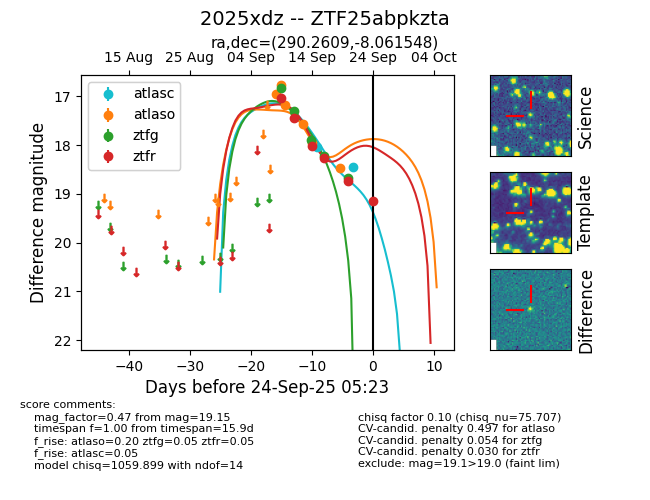
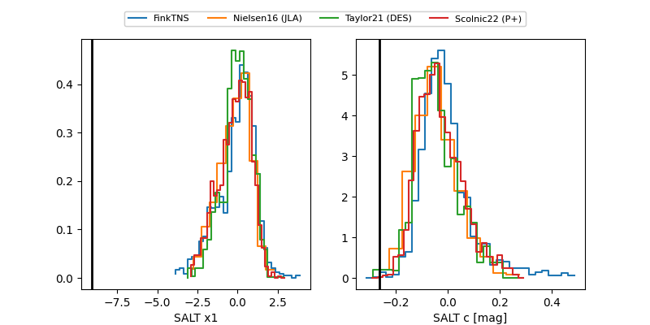

FINK: ZTF25abpkzta
Lasair: ZTF25abpkzta
ALeRCE: ZTF25abpkzta
TNS: 2025xdz
YSE: 2025xdz
ZTF25abpkzta (ztf,fink)
2025xdz (tns,yse)
equatorial (ra, dec) = (290.2609,-8.06155)
galactic (l, b) = (29.0486,-10.22189)


last atlasc=18.44, atlaso=18.46, ztfg=18.68, ztfr=19.15
2 atlasc, 6 atlaso, 5 ztfg, 6 ztfr detections